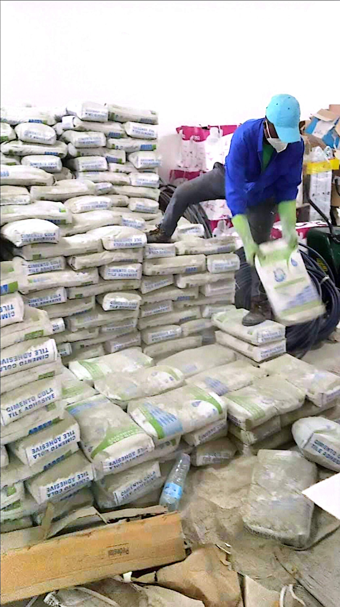
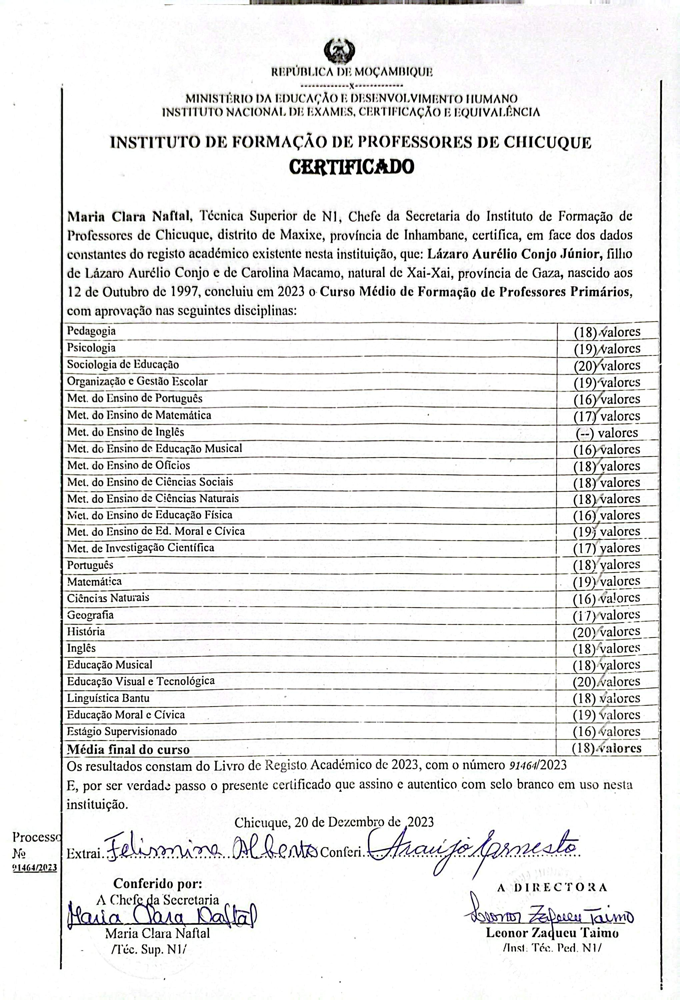
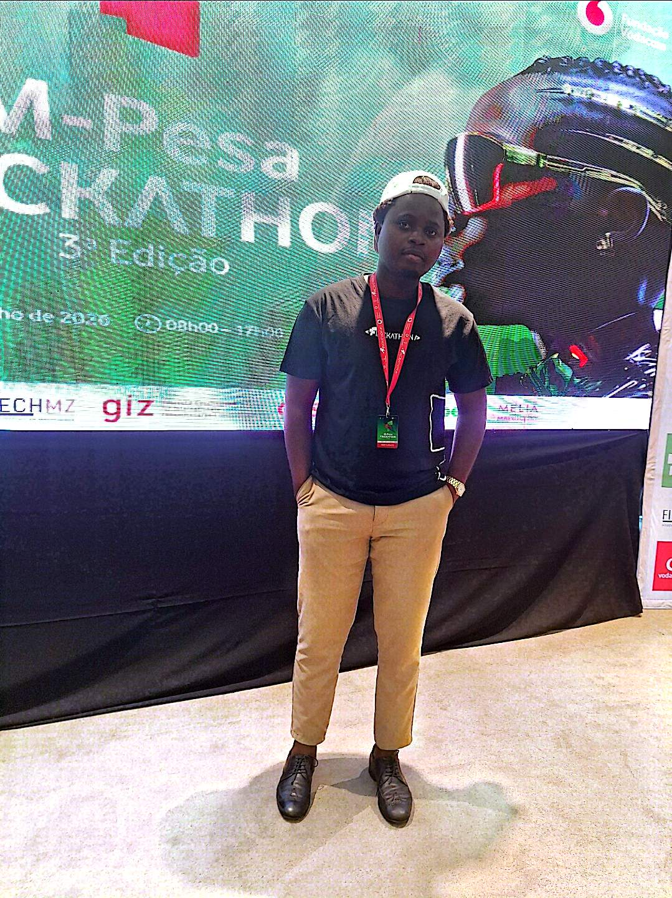
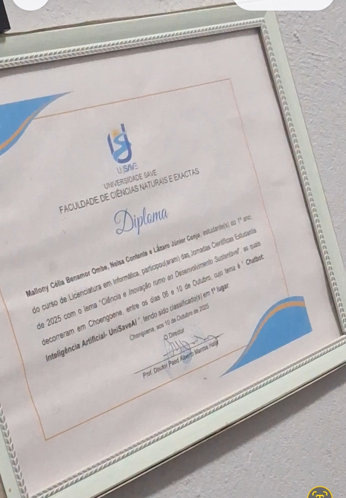
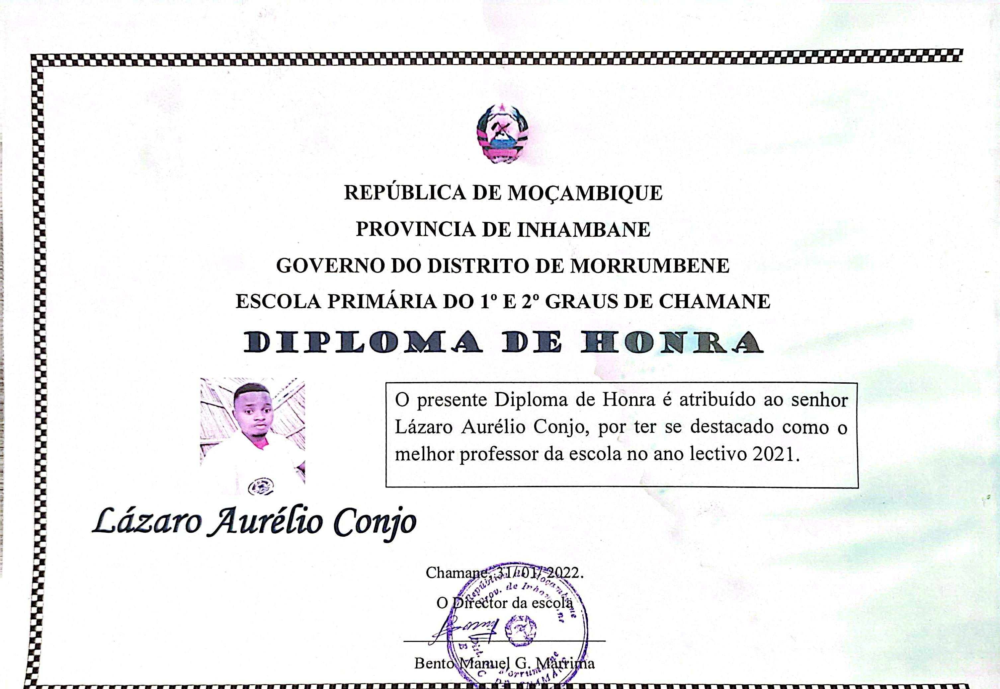
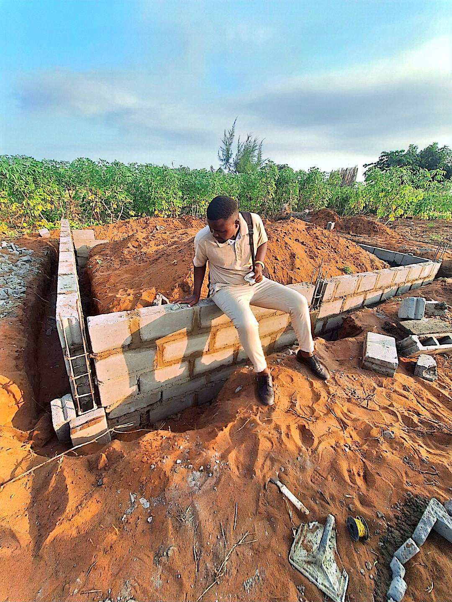

Resumo Profissional
Professor e estudante de Engenharia de Software / Informática na Universidade Save, com experiência diversificada no ensino primário e secundário, coordenação pedagógica, atendimento e gestão comercial, além de desenvolvimento de soluções tecnológicas aplicadas à educação e negócios. Profissional proactivo, focado na resolução de problemas, liderança e inovação técnica.
Experiência Profissional
Lecionação de Tecnologias de Informação e Comunicação no Ensino Secundário (8ª e 9ª classes); Integração de recursos digitais e ferramentas práticas nas actividades pedagógicas.
Coordenação pedagógica do ciclo; Supervisão de planificações de aulas e orientação metodológica aos docentes.
Lecionação no Ensino Primário Geral; Ponto focal de desporto e de estudo da legislação; Planeamento, avaliação contínua e acompanhamento do rendimento escolar.
Atendimento ao cliente, recepção e conferência de materiais de construção/ferragens, controlo de stock e inventário, gestão de caixa e apoio operacional na logística de vendas.

Ver FotoApoio escolar a estudantes do Ensino Secundário e preparação intensiva para exames de admissão ao ensino superior.
Atuação em processos eleitorais com elevado sentido de ética, organização e imparcialidade.
Educação
Foco em Engenharia de Software, Algoritmos, Estruturas de Dados, Bases de Dados e Inteligência Artificial.
Especialização pedagógica, Didáctica Geral e Psicologia de Aprendizagem.

Ver CertificadoFormação inicial para o exercício do magistério primário.
Certificações & Conquistas
Apuramento para a fase nacional do M-Pesa Finckathon 2026 com o projecto de inclusão financeira e segurança de transações.

Ver ComprovativoDesenvolvimento e premiação do assistente virtual inteligente "UnisavelA" para suporte académico aos estudantes.

Ver CertificadoReconhecimento oficial pelo empenho pedagógico e resultados de excelência no processo de ensino-aprendizagem.

Ver DiplomaMarcos Pessoais
Início das obras de construção da residência própria, no terreno adquirido em 2023.
Compra do terreno destinado à construção da residência familiar.

Ver Foto